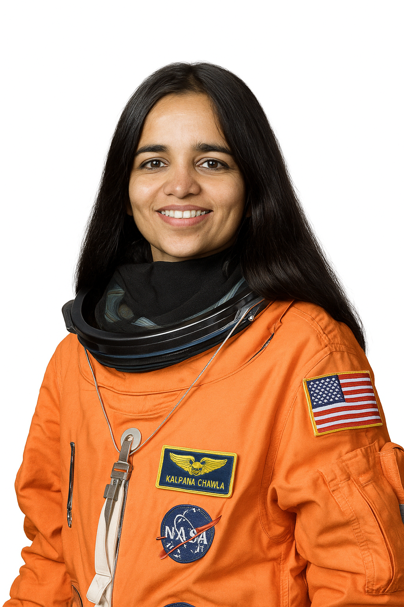

1962-2003
"The path from dreams to success does exist. May you have the vision to find it, the courage to get onto it, and the perseverance to follow it."
Kalpana Chawla was born on March 17, 1962, in Karnal, Haryana, India. From a very young age, she was curious about the sky, stars, and airplanes. She often visited flying clubs with her father and dreamed of flying in the sky. She studied at Tagore Bal Niketan School in Karnal. After finishing school, she joined Punjab Engineering College in Chandigarh and completed her Bachelor’s Degree in Aeronautical Engineering in 1982. At that time, very few girls chose this field, but Kalpana was determined to follow her passion. To achieve her dreams, she moved to the United States. There, she earned a Master’s Degree in Aerospace Engineering from the University of Texas at Arlington in 1984. Later, she completed her Ph.D. in Aerospace Engineering from the University of Colorado Boulder in 1988.
Kalpana joined NASA in 1988 as a researcher and scientist. Her work was related to fluid dynamics, space science, and flight systems. In 1995, she was selected by NASA as an astronaut. She began astronaut training, and in 1997, she became the first Indian-born woman to go to space. Her first mission was aboard the Space Shuttle Columbia (STS-87). She spent 15 days in space, performing various scientific experiments. Her performance was appreciated by NASA, and she became a role model for students across the world.
In 2003, Kalpana went on her second space mission on the Space Shuttle Columbia (STS-107). The mission lasted 16 days, during which she and her team conducted over 80 scientific experiments in microgravity, biology, physics, and space science. Unfortunately, on February 1, 2003, while returning to Earth, the shuttle disintegrated during re-entry into the Earth's atmosphere due to damage in its left wing. Kalpana Chawla and her six fellow astronauts died just 16 minutes before landing. She was only 40 years old at the time. Her death shocked the world, and she was honored globally as a hero who died for science and exploration.
Kalpana Chawla is remembered as a symbol of courage, determination, and inspiration. Even after her tragic death, she continues to motivate millions of students, especially girls, to pursue careers in science, engineering, and space research. She received many awards and honors, including: